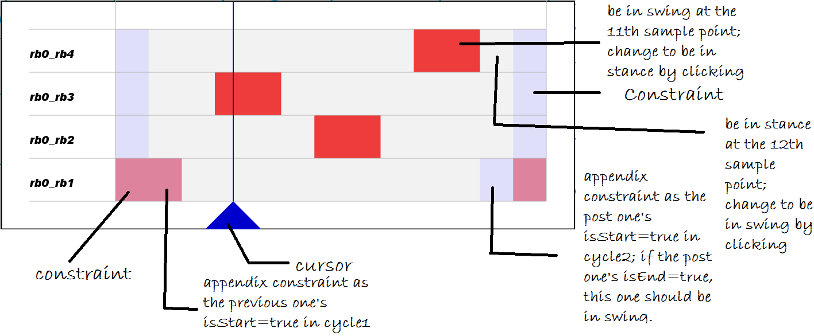

Footfall Pattern Transition Interface

Interface
The interface consists of 4*13 small rectangles. 4=number of limbs, 13=stridenum+1.
Each row represents the time line for a limb, and each column represents a time sample point. Each rectangle, therefore, represents the state for a limb at a specific time sample point: be in swing(red) or be in stance(white).
The state for every rectangle is changeable by clicking until it is claimed to be a constraint or appendix constraint(then its color would be covered by a purple mask). You could also change a row of states by clicking and moving the mouse cursor.
We assign values to those rectangles in particular sample points when we add constraints. The rectangles would then be covered by a purple mask and their states are not changeable anymore.
Appendix Constraint
There are 3 things about the added constraints that we need to consider.
If the last constraint state from cycle1 is the starting state of a swing period in cycle1.
Then we need to add an appendix swing constraint after it since a swing period could not have a single time sample point.
If the first constraint state from cycle2 is the starting state of a swing period in cycle2.
Then we need to add an appendix stance constraint before it otherwise the constraint value assigned to yPositions in the transition optimization process would be different from that in cycle2.
If the first constraint state from cycle2 is the end state of a swing period in cycle2.
Then we need to add an appendix swing constraint before it otherwise the swing period would have a single time sample point in the transition process.
Cursor
Represents the current position on the timeline.